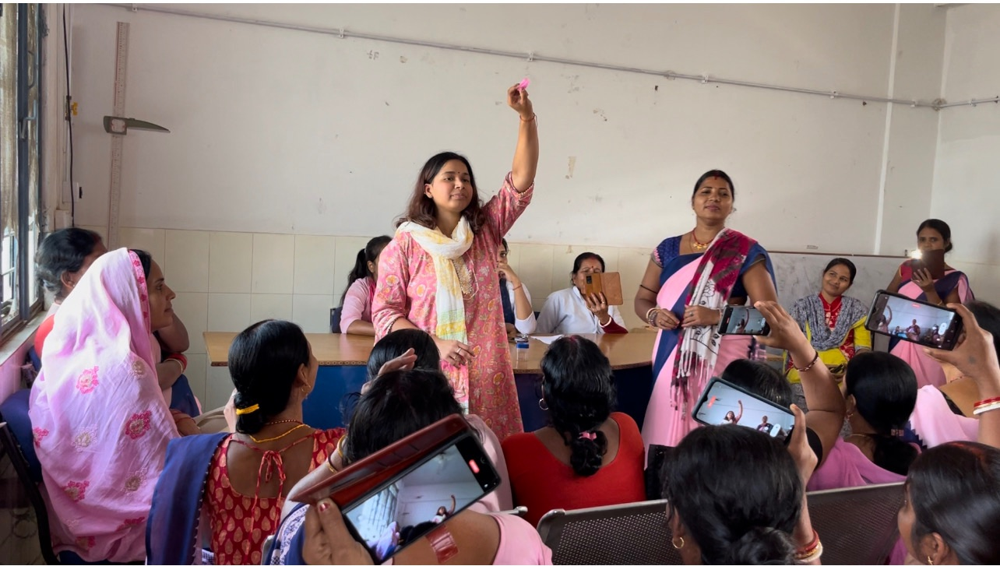

Menstrual Health
Menstrual Health & Cup Distribution
In Bihar, 67.5% of women still use cloth or nothing during their period. Not because they want to, but because nobody gave them a better option. We have the honest conversation, and give every woman a menstrual cup, free.
600+ women reached · 500 cups distributed
Learn more →